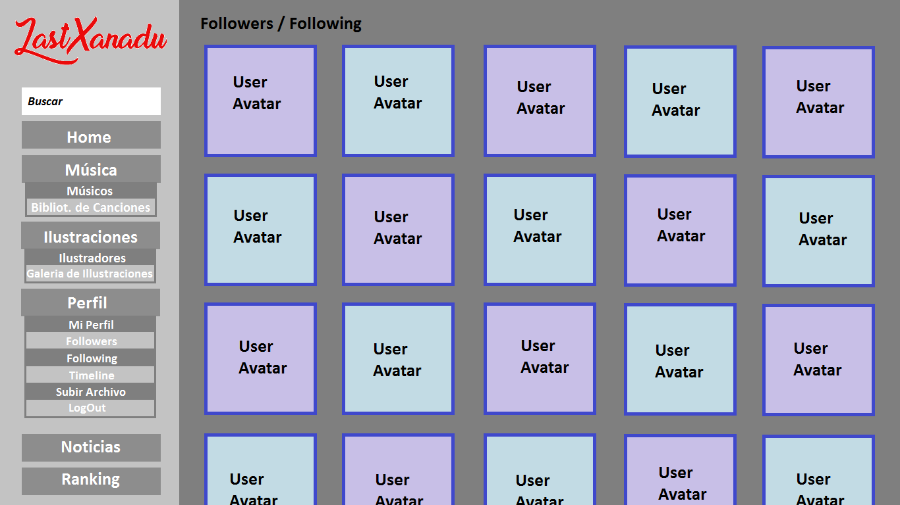

Bocetos y Vistas
Site Map
Vista de Aportaciones
| Home Página principal de la web, en la que se muestran las ultimas aportaciones subidas por todos nuestros usuarios. |
| Músicos / Ilustradores Página que muestra una tabla de usuarios de un rol (Músicos o Ilustradores), en la que se puede leer un fragmento de su descripción, su fecha de unión al sitio, y la última vez que han estado conectados. |
| Biblioteca de Canciones Página en la que se muestra todas las canciones subidas por los músicos, ordenados por antiguedad (los últimas canciones subidas aparecen primero) |
| Galeria de Ilustraciones Página que cumple la misma función que la Biblioteca de Música, pero en esta se muestran las ilustraciones subidas. |
| Mi Perfil El perfil del usuario, en el que se encuentra su descripción, sus favoritos y sus aportaciones si es que es un tipo de artista. |
| Followers / Following Página en la que se muestran los avatares y nombres de los usuarios que te estan siguiendo (followers) o que estas siguiendo (following) |
|  |
| Timeline Página en la que se muestran las últimas aportaciones subidas por aquellos usuarios a los que sigues (Página no accesible por usuarios no registrados). |
| Subir Archivo Página en la que se puede seleccionar un archivo (música o imagen) para subirla a la página. |
| Noticias Página en la que los desarrolladores de la página web / Personal de mantenimiento informa sobre los cambios recientes que se llevan a cabo, novedades a introducir, etc. |
| Ranking Página en la que se muestran las 10 aportaciones más votadas (con mayor puntuación) por los usuarios. Se muestran 10 Ilustraciones y 10 Canciones |
| Vista de Una Canción Esta vista corresponde con la visualización de una canción individual. Contiene descripción escrita por el usuario, un reproductor, y los comentarios que hayan sido publicados para esa pieza. |
| Vista de Una Ilustración Esta vista corresponde con la visualización de una ilustración individual. Contiene descripción escrita por el usuario, una versión más grande de la imagen, y los comentarios que hayan sido publicados para esa pieza. |